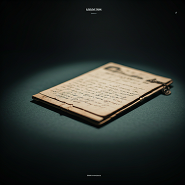
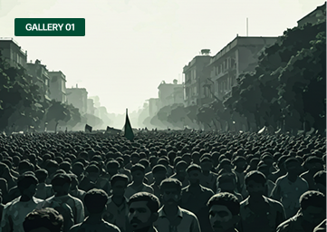
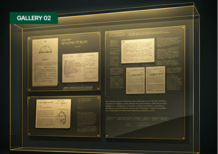
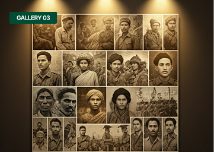

Preserving the history and honoring the heroes of 1971. A sanctuary for
memories that shaped the
birth of Bangladesh.
Founded in 1996, the Bangladesh Liberation War Museum stands as a
testament to the resilience of the human spirit. Our mission is to ocument
the 1971 Genocide and
the heroic struggle for independence, ensuring that
the sacrifices of 3 million martyrs and the
dignity of 200,000 women are
never forgotten.
Through more than 21,000 artifacts, personal archives, and survivors'
accounts, we provide a
platform for historical truth. We serve not just as a
repository of the past, but as a beacon for
democratic values, secularism,
and universal human rights for future generations.

CURATED COLLECTIONS
View All Archives

Trace the socio-political movements from the 1952 Language Movement to the historic 7th March speech,…
Go somewhere
A solemn repository of documented atrocities, victim testimonies, and the systematic evidence of the 'Operation
Go somewhere
Celebrating the valor of the Mukti Bahini. This gallery features artifacts, uniforms, and personal diaries of those
Go somewhereWe welcome visitors to experience our national history. The
Saturday — Thursday
10:00 AM — 6:00 PM
Friday
Closed
General Admission
20 BDT
Students & Children
5 BDT
Guided sessions for educational groups and tourists are available every Saturday and Monday at 11:00 AM. For large groups, please contact us 48 hours in advance.
Plot: F-11/A-B, Civic Centre, Agargaon, Sher-e-Bangla Nagar, Dhaka-1207, Bangladesh.
The mission of the Liberation War Museum is sustained by the people. Support us in digitizing rare archives, maintaining the permanent galleries, and expanding our reach to schools across Bangladesh.